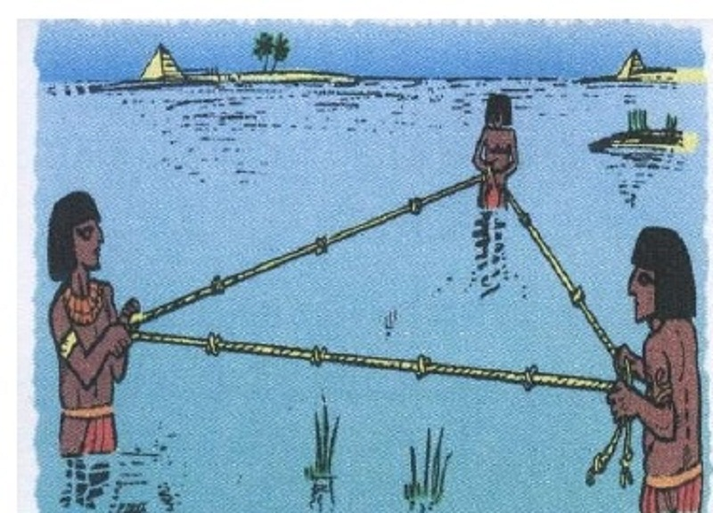
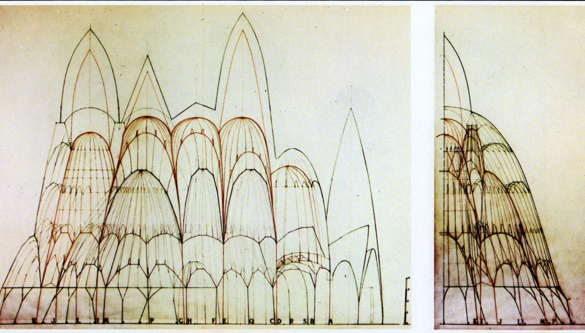
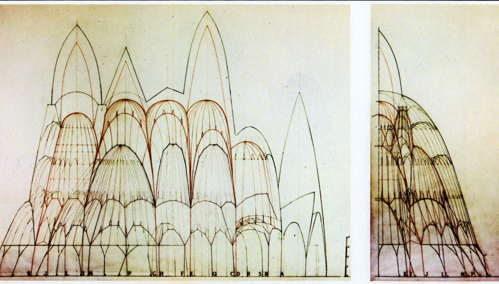
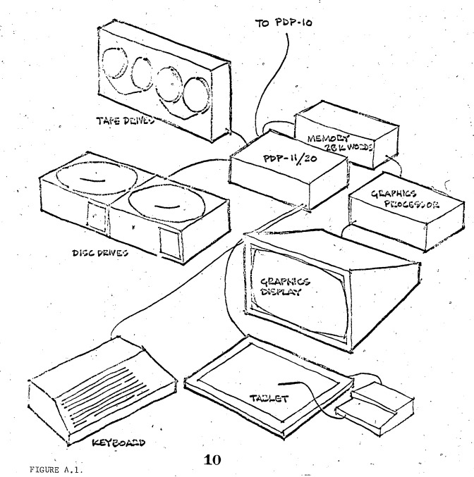
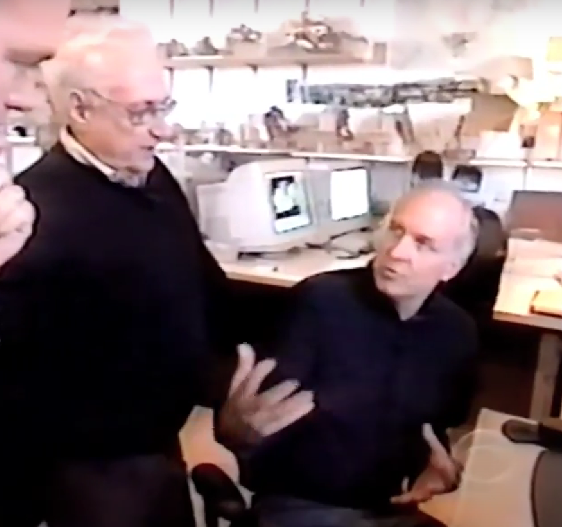

Elementos de Computação Aplicada à Arquitetura, Engenharia e Construção
SENAI-CIMATEC - 10/02/2023
Fernando Ferraz Ribeiro fernando.ribeiro@doc.senaicimatec.edu.br
"The more accurate the map, the more it resembles the territory. The most accurate map possible would be the territory, and thus would be perfectly accurate and perfectly useless."
Neil Gaiman, American Gods
Primeiras Civilizações
 https://www.satpalda.com/uploads/images/EST_3.jpgModelos geométricos tradicionais

 

FONTE: PUIG-BOADA, I.; ARIBAU, A. L’eglesia de la colonia Güell. Barcelona: Lumen, 1976.
Precursores da computação:
O Ábaco
Precursores da computação
Primeiro Computador programável
Primeiros computadores
Bombe (Alan Turing - 1939)
(Alan Turing - 1943)
Primeiros computadores
Konrad Zuse

Primeiras Linguagens de Programação

Computação gráfica e CAD
Padrões de Turing - 1952
Ivan Sutherland - Sketchpad - protótipo de CAD 1962
Eastman, C. M., Fisher, D., Lafue, G., Lividini, J., Stoker, D., and Yessios, C. (1974). An Outline of the Building Description System. Research Report
https://eric.ed.gov/?id=ED113833
Algoritmos Generativos / Modelagem Paramétrica
Stiny, Mitchell 1978 The Paladian Grammar
Computação Gráfica no Cinema
Tron 1982
GUARDIOLA HOUSE - Peter Eisenman(1988)


Frank Gehry e Rick Smith - 1991
Rick Smith Receives Collaborative Achievement Award
Rick Smith Joins Frank Gehry – 1991
Modelos Geométricos Digitais
O conceito de BIM
O termo Building Information Model (BIM) aparece pela primeira vez, nesta pesquisa, entre as palavras-chaves do artigo de Nederveen e Tolman (1992). A definição do termo entre os artigos mais citados e que estão no escopo desta pesquisa é de Succar (2009), que usa um trecho de Penttilä (2006).
Succar afirma que BIM é um conjunto de políticas, processos e tecnologias que, interagindo, geram uma metodologia para a gestão, em formato digital, do projeto de uma edificação e de seus dados, durante todo seu ciclo de vida.
Ciclo de vida da edificação

CAD x BIM
KRYGIEL, E.; NIES, B. Green BIM: Successful Sustainable Design with Building Information Modeling. Indianapolis: Wiley publishing inc, 2008.
CARACTERÍSTICAS DOS SISTEMAS BIM
- Organização das informações em um único modelo geométrico digital
- Modelagem paramétrica
- Orientação á objetos (POO)
- Comunicação e colaboração entre os diversos profissionais envolvidos no projeto
- Suporte a todo o ciclo de vida da edificação
Alguns editores BIM para Projeto
Curva de MacLeamy
COMPARAÇÃO DO TEMPO USADO NAS DIFERENTES ETAPAS DO PROJETO
COM ADOÇÃO DE DIFERENTES TECNOLOGIAS
LOD - Level Of development
- LOD 100 - Fase conceitual
- LOD 200 - Projeto em desenvolvimento
- LOD 300 - Documentação para construção
- LOD 350 - Integração das disciplinas de projetos
- LOD 400 - Construção
- LOD 500 - As built - Gerenciamento e manutenções
Dimensões do BIM

Implementando BIM
Obstáculos para a implementação do BIM
Documentação do processo BIM
- BIM Implementation Plan - BIP
- BIM Execution Plan (BEP)
- Manual de estilo
- BIM Mandate(?)
https://bimdictionary.com/
IFC e OpenBIM
Para tornar o BIM uma plataforma aberta, em 1994 cria-se o Building Smart, grupo técnico responsável pelo desenvolvimento do IFC (Industry Foundation Classes), em 1997, um formato de arquivo de dados de arquitetura aberta, uma linguagem comum, utilizada para a troca entre modelos de diversos fabricantes;
No entanto, como existem diversas ferramentas de criação com diferentes mecanismos de se criar a geometria e dados associados, no processo de exportação para IFC, esse mapeamento pode não ser bem identificado. Desta forma, pode ocorrer perda de informação.
https://www.buildingsmart.org/
Documentação IFC 4